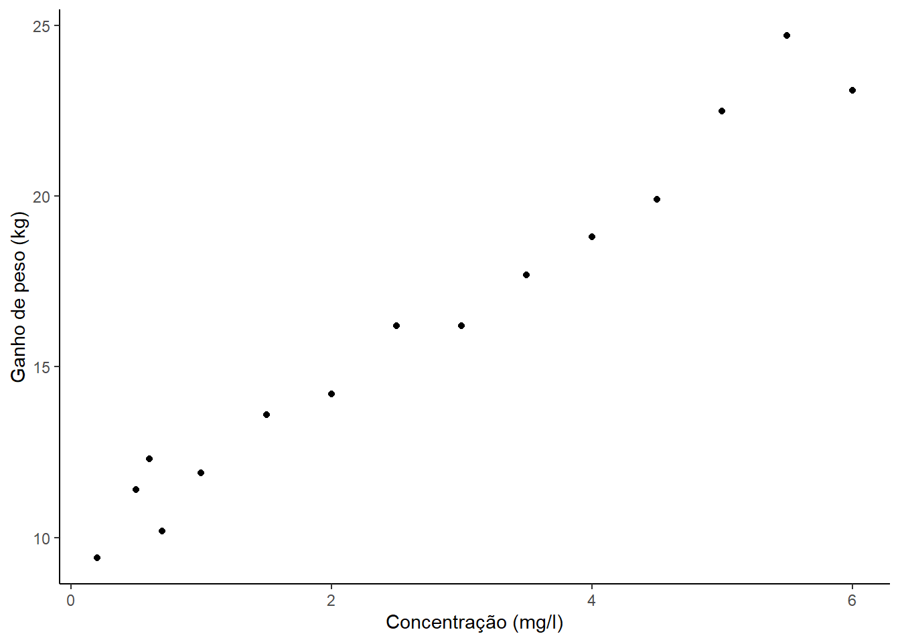
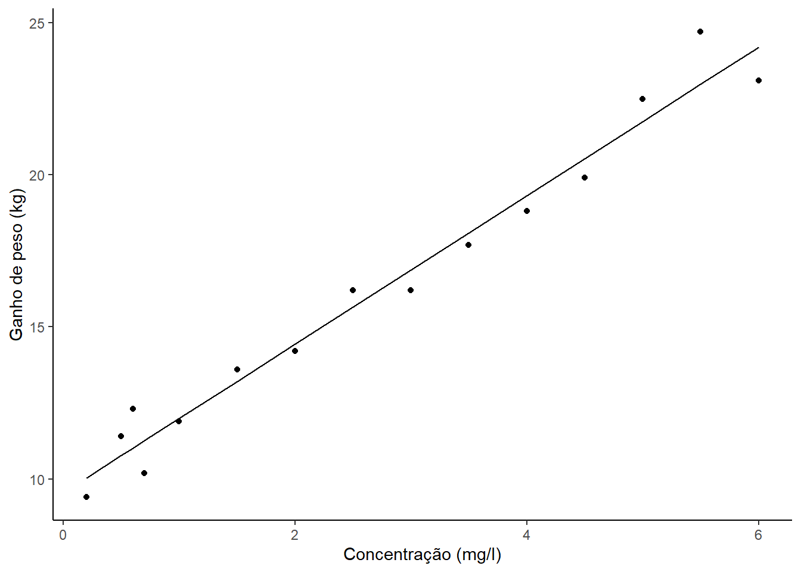

Capítulo 5 Regressão no R
No R é muito comum utilizar o comando lm() em trabalhos relacionados a análise de regressão simples ou múltipla. Esse comando produz vários resultados que podem ser utilizados nesse tipo de análise.
O comando lm() associado ao comando summary () apresenta um relatório útil com resultados importantes que devem ser considerados pelo analista.
5.1 Relatório do modelo
Acredita-se que a presença de uma substância na alimentação de bovinos melhora o ganho de peso desses animais. Para verificar essa hipótese, foram escolhidos 15 bois de mesma raça e idade, e cada um recebeu uma determinada concentração da substância X (mg/l). O ganho de peso após 30 dias, Y (kg), e a concetração atribuída foram as seguintes:
| X (concentração - mg/l) | Y (ganho de peso - Kg) |
|---|---|
| 0,2 | 9,4 |
| 0,5 | 11,4 |
| 0,6 | 12,3 |
| 0,7 | 10,2 |
| 1,0 | 11,9 |
| 1,5 | 13,6 |
| 2,0 | 14,2 |
| 2,5 | 16,2 |
| 3,0 | 16,2 |
| 3,5 | 17,7 |
| 4,0 | 18,8 |
| 4,5 | 19,9 |
| 5,0 | 22,5 |
| 5,5 | 24,7 |
| 6,0 | 23,1 |
Essas informações serão organizadas em um data frame chamado de dados, a partir desse data frame será calculada a correlação entre as varíaveis X e Y e gerá um gráfico de dispersão afim de observar o comportamento destes dados.
dados <- data.frame(
X = c(0.2, 0.5, 0.6, 0.7, 1.0,
1.5, 2.0, 2.5, 3.0, 3.5,
4.0, 4.5, 5.0, 5.5, 6.0),
Y = c( 9.4, 11.4, 12.3, 10.2, 11.9,
13.6, 14.2, 16.2, 16.2, 17.7,
18.8, 19.9, 22.5, 24.7, 23.1)
)
correlacao <- cor (dados$X, dados$Y)
library(ggplot2, warn.conflicts = FALSE)
ggplot(dados, aes(x=X, y=Y)) +
geom_point()+
labs(x="Concentração (mg/l)",
y="Ganho de peso (kg)")+
theme_classic()
A correlação 0.98 e o gráfico de dispersão indicam que um modelo linear é uma boa opção. Agora:
Ajustaremos o modelo \(Y = \beta_o + \beta_1 X\) por meio da função
lm().Faremos um gráfico de dispersão com os dados observados e a reta predita pelo modelo.
Apresentaremos o relatório gerado pelo comando
summary().
O ajuste do modelo será atribuído ao objeto modelo, que contém os valores preditos pelo modelo no componente fitted.values.
modelo <- lm(Y ~ X, dados)
result <- data.frame (dados, predito = modelo$fitted.values)
ggplot(result) +
geom_line( aes(x=X, y=predito))+
geom_point( aes(x=X, y=Y))+
labs(x="Concentração (mg/l)",
y="Ganho de peso (kg)")+
theme_classic()
Graficamente, a reta proposta se ajusta bem aos dados. O relatório a seguir nos dará informações para uma melhor avaliação do modelo. Esse relatório é gerado pelo comando R summary():
##
## Call:
## lm(formula = Y ~ X, data = dados)
##
## Residuals:
## Min 1Q Median 3Q Max
## -1.0934 -0.6359 -0.2317 0.5885 1.7268
##
## Coefficients:
## Estimate Std. Error t value Pr(>|t|)
## (Intercept) 9.5509 0.3956 24.14 3.49e-12 ***
## X 2.4404 0.1199 20.36 3.03e-11 ***
## ---
## Signif. codes: 0 '***' 0.001 '**' 0.01 '*' 0.05 '.' 0.1 ' ' 1
##
## Residual standard error: 0.8812 on 13 degrees of freedom
## Multiple R-squared: 0.9696, Adjusted R-squared: 0.9673
## F-statistic: 414.5 on 1 and 13 DF, p-value: 3.034e-11O summary(modelo) apresenta 7 resultados:
Call. A presenta a chamada da função usada para construir o modelo de regressão.
Residuals. O relatório descreve de maneira sucinta a distribuiçãos dos resíduos, que deve ter média e mediana* proximas de zero e o valor máximo** e o valor mínimo aproximadamente iguais em valor absoluto. Pois, por definição, a distribuição dos resíduos tem distribuição normal com média zero.
Coefficients. Apresenta os coeficientes do modelo e a sua significância estatística. O intercepto e as variáveis independentes que estão significativamente associada com a variável dependente são assinaladas com asterscos.
Residual standard error (RSE).
R-squared (R2).
Adjusted R-squared
F-statistic are metrics that are used to check how well the model fits to our data.
5.2 Significância dos coeficientes
A tabela dos coeficeintes do relatório associado ao modelo estatístico é composta por:
estimativa dos coeficientes do modelo
standard errors (SE) que são medidas de precisão (acuracia) dos coeficientes. O SE representa a variabilidade de um dado coeficiente quando obtido de varias amostras. Também pode ser usado para obter intervalos de confiança e a estatística teste t.
**estistica teste t* e o p-valor associados, que decide a significância do coeficiente.
Coefficients:
Estimate Std. Error t value Pr(>|t|)
(Intercept) 9.5509 0.3956 24.14 3.49e-12 ***
X 2.4404 0.1199 20.36 3.03e-11 ***
---
Signif. codes: 0 ‘***’ 0.001 ‘**’ 0.01 ‘*’ 0.05 ‘.’ 0.1 ‘ ’ 15.3 Estística t e p-valor:
Para uma variável dependente, a estatística t e o seu p-valor associado testa se a relação entre a variável independente e a dependentes é significante, isto é, se o coeficeinte da variável dependente é significativamente diferente de zero.
As hipóteses testadas são:
- Hipótese nula (H0) : O coeficeinte é igual a zero.
- Hipotese alternativa (Ha): o coeficiente é diferente de zero.
Para um coeficiente $ $, o teste t calcula a estatistica teste:
\[ t = \dfrac{\beta -0 }{SE(\beta)}, \]
onde SE( \(\beta\) ) é o erro padrão de \(\beta\). A testatística teste \(t\) mede a quantidade de desvios padrões que há entre \(\beta\) e zero. Grandes valores da estatística \(t\) geram pequenos valores para o p-valor.
Altos valores da estatistica t, que são associados a baixos valores de p-valor, indicam que a variável dependente analisada é mais significante.
A legenda abaixo da tabela dos significantes é usada para indicar o nível de significância \(\alpha\) para se rejeita a hipótese nula: um asterisco indica que se rejeita \(H_0\) para \(0.01 < \alpha <= 0.05\). Quanto mais asterisco, após o \(p-valor\), a variável independente é mais significante.
Um coeficiente estatísticamente significante de uma variável dependnete indica que há uma relação entre essa variável e a variável independente.
No exemplo analisado, os p-valor associado tanto ao intercepto quanto a variável X, são altamente significantes, que indica para a rejeição de \(H_0\) e favor de \(H_a\), que siginifica que o intercepto e a variável X influênciam na vairável dependente \(Y\).
Para uma dada variável independente, o teste t podem também ser útil como critério de permanência, ou não, dessa variável no modelo. Altos valores da estatistica t, sempre associado a baixos valores do p-valor, indicam que a variável deve ser mantida no modelo, equanto baixo valores da estatistica t, sempre associado a altos valores do p-valor, conduzem para a retirada do modelo.
5.4 Intervalos de confiança
O erro padrão mede a variabilidade dos coeficientes. Ele é usado para calcular os intervalos de confiança desses coeficientes.
Por exemplo o intervalo de confiança, com nível de confiança de 95%, para um certo coeficiente \(\beta\) é definido por
\[
\beta +/- 2*SE(beta),
\]
onde,
o limite inferior é b1 = b1 - 2SE(b1) = 0.047 - 20.00269 = 0.042
o limite superior é b1 = b1 + 2SE(b1) = 0.047 + 20.00269 = 0.052
Assim, há uma probabilidade de 95% do intervalo [0.042, 0.052] conter o verdadeiro valor de b1. Similarmente um intervalo de comfianca de 95% pode ser construído para b0.
Estes inntervalos são calculados pelo comando confint():
## 2.5 % 97.5 %
## (Intercept) 8.696207 10.405554
## X 2.181454 2.6993755.5 Medidas de ajuste do modelo
Uma vez identificado, ao menos, uma variável dependente significante associada a variável independente. O diagnóstico do modelo para checar o ajusto do modelo aos dados. Este processamento é também conhecido por goodness-of-fi.
A qualidade geral do modelo de regressão linear ajustado pode ser verificada por três quantidades, são apresentados no relatório gerado para o modelo:
- Residual Standard Error (RSE).
- R-squared (R2) and Adjusted R2 (R2 ajustado)
- F-statistic
Residual standard error: 0.8812 on 13 degrees of freedom
Multiple R-squared: 0.9696, Adjusted R-squared: 0.9673
F-statistic: 414.5 on 1 and 13 DF, p-value: 3.034e-115.5.1 Residual standard error (RSE).
O RSE é uma indicação da variabilidade dos resíduos, é o desvio médio dos pontos observados em torno da linha de regressão ajustada. Este é o desvio padrão de erros..
O RSE fornece uma medida dos dados que não podem ser explicados pelo modelo. Ao comparar dois modelos, o modelo com o RSE menor é uma boa indicação de que esse modelo se ajusta melhor aos dados.
Dividir o RSE pelo valor médio da variável dependente fornecerá a taxa de erro de previsão, que deve ser a menor possível.
No nosso exemplo, RSE = 0,8812, significando que os ganhos de peso observados divergem da linha de regressão verdadeira em aproximadamente 0.8812 unidades em média.
Se um RSE de 0,8812 unidades é ou não um erro de previsão aceitável é subjetivo e depende do contexto do problema. No entanto, podemos calcular o erro percentual. Em nosso conjunto de dados, o valor médio de ganho de peso é 16,1400 e, portanto, o erro percentual é de 0,8812/ 16,1400 = 5.4596 %.
## [1] 16.14## [1] 5.4595815.5.2 R2 e R2 ajustado
O R-squared (R2) assume valor entre 0 e 1 e informa a proporção da informação (variância) nos dados que o modelo consegue explicar.
O R2 mede o ajuste do modelo aos dados. Em uma regressão linear simples, o R2 é o coeficiente de correlação de Pearson ao quadrado.
Um alto valor do R2 é um bom indicativo. Entretanto, o valor do R2 tende a aumentar com o aumento do número de variáveis independentes no modelo. Assim, em uma regressão linera múltipla, deve-se considera o valor do R2 ajustado, que penaliza o R2 para um grande número de variáveis independentes.
Um R2 ajustado próximo de 1 indica que uma grande poroporção da variabilidade da variável resposta é explicada pelo modelo. Um valor próximo de 0 indica que o modelo de regressão não explica variabiliadade da variável dependente.
5.5.3 F-Statistic:
O teste F é um teste de signifiância geral, e indica se ao menos uma variável independente tem o seu coeficiente diferente de zero.
Em uma regressão linear simples, este teste não tem um real interesse, pois apenas replica a informação dada pelo teste t apresentado no relatório do modelo. De fato, a estatistica F é o quadrado da estatística t. No exemplo, 414.5 = 20.362. Isso é verdade para qualquer modelo com 1 grau de liberdade.
A estatística F tem maior importância quando há varias variáveis independentes, como na regressão linear múltipla.
Uma estatística F com valor alto corresponde a um p-valor estatisticamente significante (p < 0.05). Em nosso exemplo, a estatística F é igual a 414.5 e produz um p-valor de 3.034e-11, que é muito significante.
5.6 Resumo
Ajustar o modelo de regressão.
Verificar se há, ao menos, uma variável independente está significativamente associada a variável dependente.
Se uma oum mais variáveis dependentes são significativas, verificar a qualidedade do ajuste do modelo pela análise dos valores do RSE, do R2 e da Estatistica F.